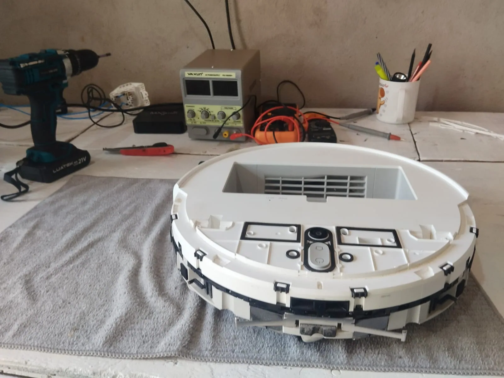

01completo
Manutenção completa
Desmontagem técnica, limpeza interna profunda e remontagem com revisão de todos os módulos. O pacote que devolve ao robô o desempenho de fábrica.
- Desmontagem e higienização interna
- Remoção de poeira do motor
- Revisão de conexões e vedações
- Teste final de sucção e navegação
